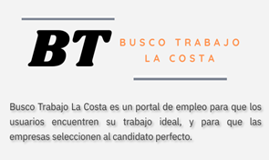

BT LA COSTA

Si buscas trabajo o personal para tu empresa, BT la costa es tu eleccion
- Los anuncios divididos por localidades.
- La oferta y la demanda estaran en distintas secciones.
- Sitio libre de anuncios spam.
- Todos los anuncios deberan obligatoriamente tener nombre del lugar y descripcion.
Ofrecemos una herramienta más que sirva para facilitar información y poder de una forma más clasificada y ordenada encontrar los anuncios disponibles en cualquier momento que se solicite. Enfocandonos en la zona geografica local se buscará una comunicación óptima entre el usuario y el sistema, de forma que las secciones se encuentren ordenadas para la búsqueda de ofertas y demandas, creando así un sitio web de búsqueda laboral con una interacción cómoda para los usuarios. Además se brindará seguridad y autenticación de cuentas, mayormente para que las publicaciones que harán los usuarios sean confiables.